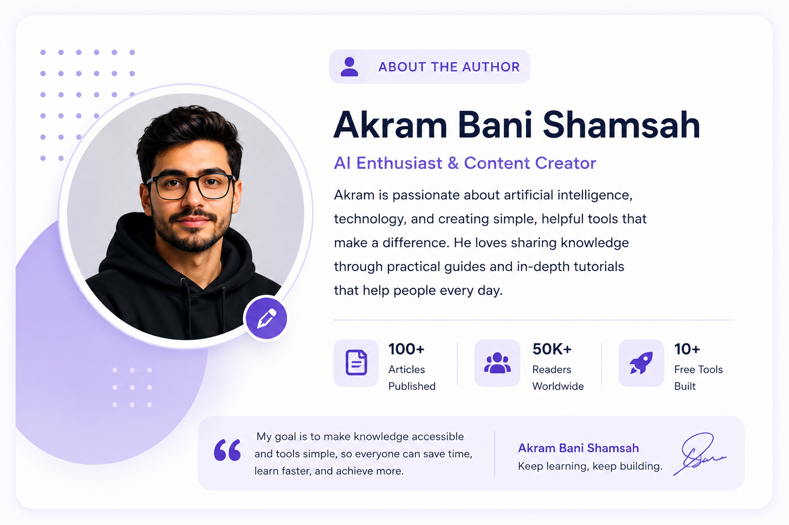

Image resizing seems simple, but choosing the wrong method can quickly reduce image quality, create pixelation, or distort important visual details.
AI image resizing changes this process completely by using intelligent algorithms that understand image structure rather than simply stretching pixels.
🚀 What You'll Learn
🎯 What Is AI Image Resizing? 🔬 How AI Resizing Works 🛠️ Best AI Resizers 📊 Comparison Guide 💼 Business Applications ⚠️ Common Mistakes 🔮 Future Trends🎯 What Is AI Image Resizing?
AI image resizing uses machine learning models to intelligently enlarge or reduce image dimensions while preserving details, textures, and overall image quality.
Unlike traditional resizing methods, AI systems analyze image content and reconstruct details during the resizing process.
🔬 How AI Image Resizing Works
Traditional image resizing simply adds or removes pixels, often resulting in blurry edges, distorted details, and reduced image quality.
AI image resizers take a completely different approach. Instead of stretching pixels, they analyze image content and predict how details should appear at different dimensions.
Advanced machine learning models are trained on millions of images, allowing them to recognize textures, objects, edges, patterns, and visual structures.
Smart Analysis
AI understands image structure before resizing.
Detail Preservation
Important textures and edges remain sharp.
Fast Processing
Results are generated within seconds.
AI resizing can significantly improve image quality compared to traditional resizing methods, especially when enlarging photos.
🛠️ Best AI Image Resizer Tools In 2026
Several AI-powered image resizing tools have emerged as industry leaders due to their quality, speed, and advanced enhancement capabilities.
Topaz
Professional Enhancement
Canva
Beginner Friendly
Adobe
Creative Ecosystem
Upscale
Fast AI Results
The ideal choice depends on whether your focus is professional photography, e-commerce, content creation, or social media publishing.
📊 AI Image Resizer Comparison
Not all AI image resizing tools deliver identical results. Some focus on speed while others prioritize image reconstruction and professional quality.
| Tool | Best For | Quality | Ease Of Use |
|---|---|---|---|
| Topaz Gigapixel | Professional Photos | ⭐⭐⭐⭐⭐ | ⭐⭐⭐⭐ |
| Adobe Express | Marketing Content | ⭐⭐⭐⭐⭐ | ⭐⭐⭐⭐ |
| Canva AI | Social Media | ⭐⭐⭐⭐ | ⭐⭐⭐⭐⭐ |
| Upscale.media | Quick Results | ⭐⭐⭐⭐ | ⭐⭐⭐⭐⭐ |
For creators who regularly work with images, combining AI resizing and AI enhancement often delivers the best results.
💼 Real-World Business Applications
AI image resizing has become an essential technology for businesses that manage large volumes of visual content.
From e-commerce stores to media companies, organizations use AI-powered resizing tools to prepare images for multiple platforms while maintaining consistent quality.
E-Commerce
Optimize product images for marketplaces and online stores.
Social Media
Resize content perfectly for every platform.
Publishing
Prepare visuals for blogs, magazines, and websites.
Businesses often require multiple image sizes for websites, mobile applications, advertisements, and social media channels.
AI resizing dramatically reduces the time required to prepare these assets while maintaining professional visual standards.
Companies can save hours of manual editing work while maintaining consistent branding across every platform.
⚠️ Common Image Resizing Mistakes
Even with advanced AI tools, poor practices can still reduce image quality and negatively affect user experience.
✅ Best Practices
- Start with high-resolution images.
- Use AI-powered resizing tools.
- Export in modern formats.
- Check image quality after resizing.
- Maintain consistent dimensions.
❌ Common Mistakes
- Using low-quality originals.
- Over-compressing images.
- Ignoring aspect ratios.
- Using outdated resizing methods.
- Stretching images manually.
🔮 The Future Of AI Image Resizing
The next generation of AI image resizing tools will become increasingly intelligent and capable of understanding image context in greater detail.
Future systems may automatically adapt image dimensions based on platform requirements, user behavior, device type, and visual content.
AI
Context Awareness
4K+
Ultra-HD Outputs
Auto
Smart Optimization
Cloud
Instant Processing
As AI models improve, resizing will become part of a larger image optimization workflow that includes enhancement, compression, restoration, and smart editing.
AI image resizing is evolving from a simple utility into a complete image quality optimization solution.
🏆 Final Verdict
AI image resizing has become one of the most valuable technologies in modern digital content creation.
Instead of relying on outdated resizing methods that often reduce image quality, AI-powered solutions intelligently analyze visual information and preserve important details during the resizing process.
Whether you are a photographer, designer, blogger, marketer, business owner, or content creator, AI image resizers can significantly improve workflow efficiency while maintaining professional-quality visuals.
As image optimization becomes increasingly important for websites, social media, e-commerce, and digital marketing, AI resizing tools will continue to play a critical role in helping users create better visual experiences.
AI image resizing is no longer just about changing dimensions. It is about preserving quality, improving user experience, and maximizing the value of every image.
🌟 Why Professionals Use AI Image Resizers
Professionals choose AI image resizing tools because they deliver better visual quality, faster workflows, and improved results compared to traditional image editing methods.
By leveraging machine learning, these tools help preserve textures, edges, and fine details that would otherwise be lost during standard resizing processes.
📌 Quick Summary
- AI resizing preserves image quality.
- Ideal for websites, e-commerce, and social media.
- Reduces manual editing work.
- Improves content consistency.
- Supports modern digital workflows.
- Expected to become even smarter in the coming years.
❔ Frequently Asked Questions
Can AI Resize Images Without Losing Quality?
Yes. AI image resizers use machine learning algorithms to preserve important visual details while changing image dimensions.
Is AI Resizing Better Than Traditional Resizing?
In most cases, yes. AI tools can reconstruct missing details and maintain image sharpness more effectively than standard resizing methods.
What Is The Best AI Image Resizer?
Popular options include Topaz Gigapixel, Adobe Express, Canva AI, and Upscale.media, depending on your needs.
Can AI Upscale Images?
Yes. Many AI image resizers can enlarge images while preserving quality and improving visual clarity.
Who Should Use AI Image Resizers?
Photographers, bloggers, designers, marketers, businesses, and content creators can all benefit from AI-powered resizing tools.
📰 Explore More AI Guides
🚀 Continue Exploring AI Image Tools
Discover more AI-powered solutions designed to improve image quality, automate editing tasks, and help creators produce professional visual content faster.
Browse All Articles👨💻 About The Author
Smart AI Tools Guides
AI Tools Researcher • Digital Publisher • Technology Writer
Smart AI Tools Guides publishes in-depth tutorials, tool reviews, image editing resources, SEO guides, and AI-focused educational content designed to help creators, businesses, and digital professionals make informed decisions.
